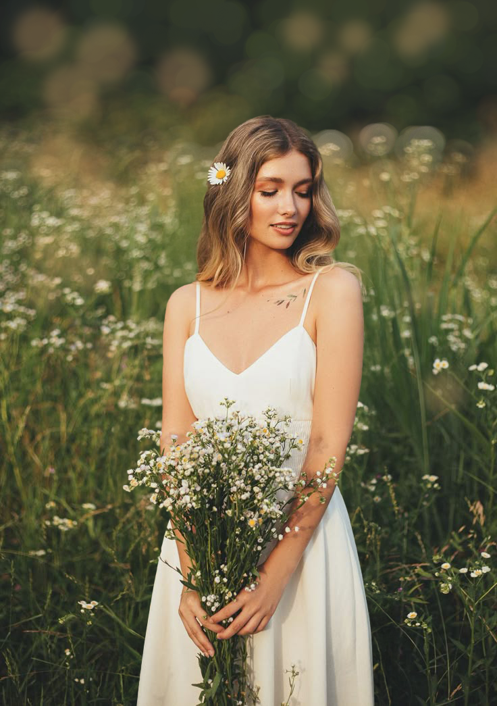
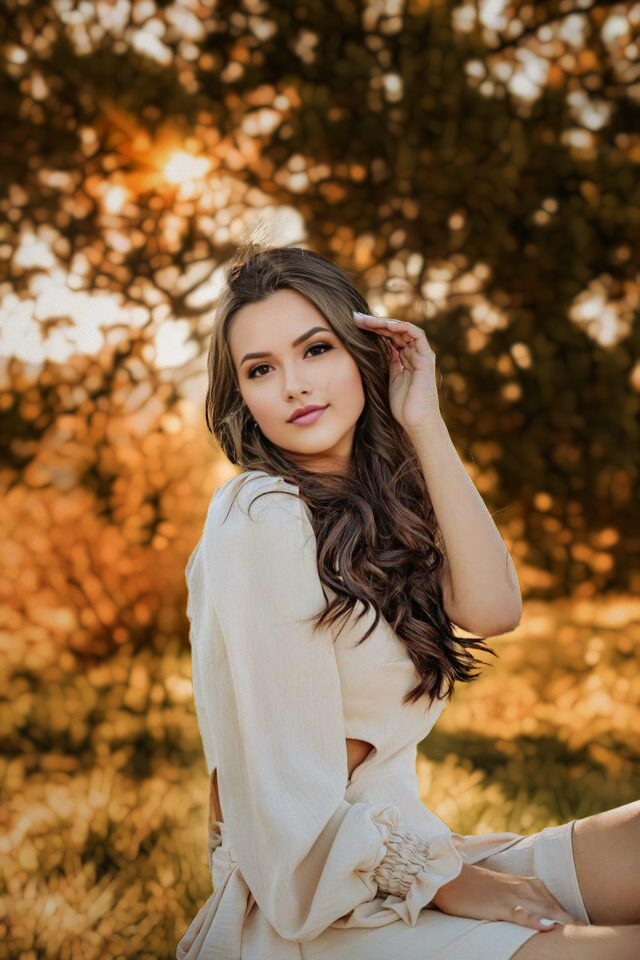
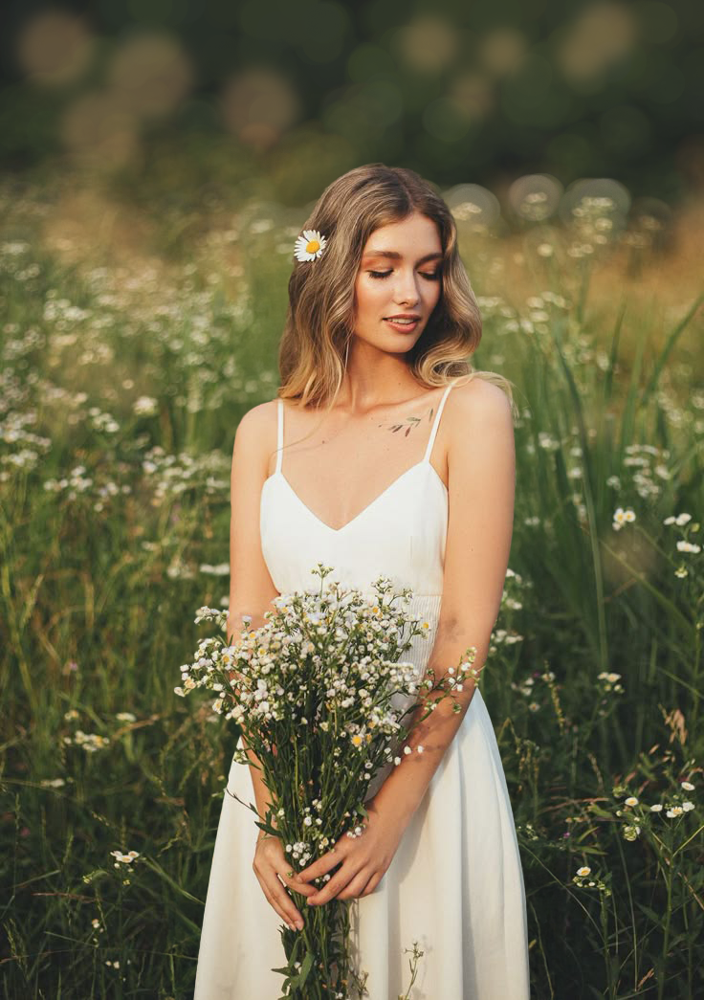
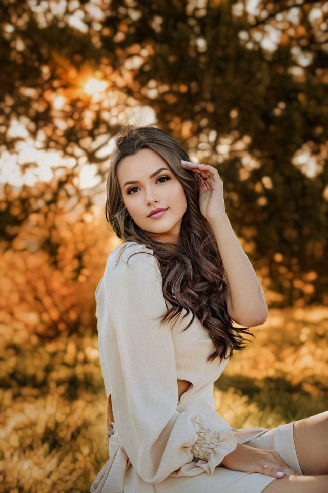
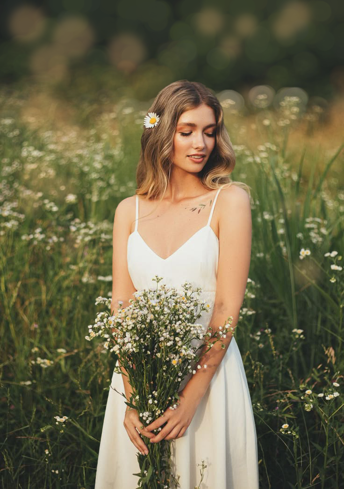
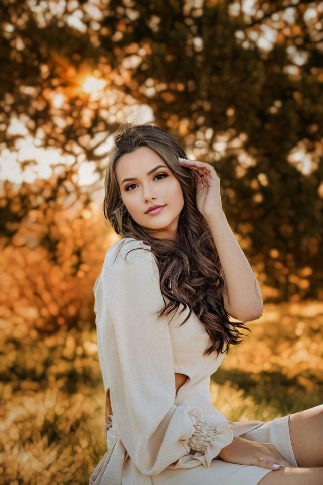

Soy un editor de fotos dedicado a mejorar la calidad y el impacto visual de tus imágenes. Con experiencia en Photoshop, me enfoco en la corrección de color, iluminación y textura, así como en el retoque de imperfecciones y la eliminación de objetos no deseados. También me enfoco en desarrollar estilos únicos, como Fine Art, Polaroid y cine.

